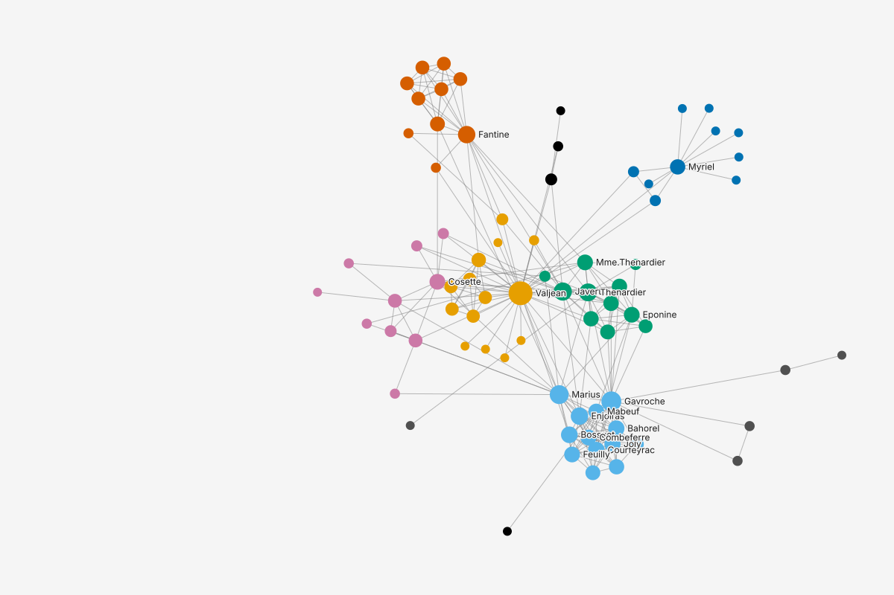
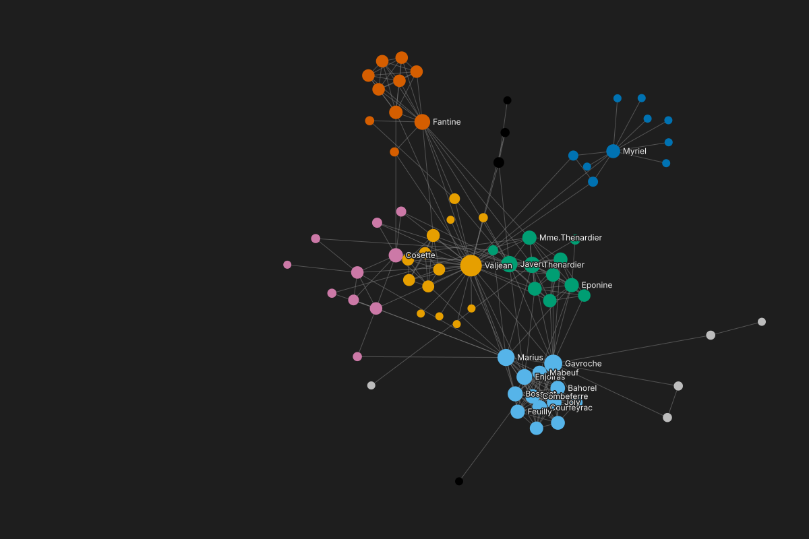

NodesEdges
| label |
|---|
Les Miserables, 77 characters and 254 co-appearances. The edge column value counts shared scenes. Read as a length it gives a believable, wrong betweenness ranking with no error. What a higher value means is asked by each run, never set on the column. Six states: the load step, the run's question, its answers, the wrong result, the change and the re-run.
miserables.json dropped on a blank project. The load step shows the edge column value as data only: whole numbers, their range and their spread. What a higher value means is not a property of the column; each run that reads value asks it. The project keeps its blank name until Load commits.
| label |
|---|
Alex clicks Betweenness in the Catalog. Its run form reads the weight column value and asks "For value, a higher number means..." with nothing chosen. Run stays disabled until he answers. The graph's Statistics describe value only by its data.


| label | group 10 values | degree | betweenness |
|---|---|---|---|
| Valjean | 2 | 36 | |
| Gavroche | 8 | 22 | |
| Javert | 4 | 17 | |
| Myriel | 1 | 10 | |
| Thenardier | 4 | 16 | |
| Fantine | 3 | 15 | |
| Mabeuf | 8 | 11 |
The question is a radio group with nothing chosen. Each answer carries one line saying how the run will turn value into a length. He thinks of a number on an edge as a length and picks a longer or costlier step; Run turns on.
| label | group 10 values | degree | betweenness |
|---|---|---|---|
| Valjean | 2 | 36 | |
| Gavroche | 8 | 22 | |
| Javert | 4 | 17 | |
| Myriel | 1 | 10 | |
| Thenardier | 4 | 16 | |
| Fantine | 3 | 15 | |
| Mabeuf | 8 | 11 |
Betweenness ran at once. It read value as a length, so the heaviest co-appearances count as the longest ties and paths go around them. The result's state line names the conversion it used: Distance = value.
| label | group 10 values | degree | betweenness 0 to 0.454 |
|---|---|---|---|
| Valjean | 2 | 36 | 0.454 |
| Gavroche | 8 | 22 | 0.285 |
| Javert | 4 | 17 | 0.193 |
| Myriel | 1 | 10 | 0.177 |
| Thenardier | 4 | 16 | 0.129 |
| Fantine | 3 | 15 | 0.114 |
| Mabeuf | 8 | 11 | 0.089 |
Alex opens the result. Its editor shows the same question with his answer. He changes it to a closer or stronger link. This run's option changed, so Run 1 is Out of date at once, with one verb, Re-run (keeps Run 1); its numbers stay, marked, until he asks. Nothing on the column changed, and no other result is touched.
| label | group 10 values | degree | betweenness Out of date |
|---|---|---|---|
| Valjean | 2 | 36 | 0.454 |
| Gavroche | 8 | 22 | 0.285 |
| Javert | 4 | 17 | 0.193 |
| Myriel | 1 | 10 | 0.177 |
| Thenardier | 4 | 16 | 0.129 |
| Fantine | 3 | 15 | 0.114 |
| Mabeuf | 8 | 11 | 0.089 |
Read as a closer link, strong ties are short. Marius climbs from 10th to 2nd; Javert falls from 3rd to 45th. Run 2's state line names the new conversion, Distance = 1 / value; Run 1 stays in the list under it with its own.
| label | group 10 values | degree | betweenness 0 to 0.795 |
|---|---|---|---|
| Valjean | 2 | 36 | 0.795 |
| Marius | 8 | 19 | 0.499 |
| Myriel | 1 | 10 | 0.224 |
| Fantine | 3 | 15 | 0.193 |
| Courfeyrac | 8 | 13 | 0.177 |
| Thenardier | 4 | 16 | 0.172 |
| Gavroche | 8 | 22 | 0.102 |